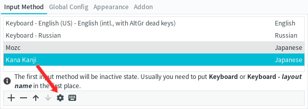
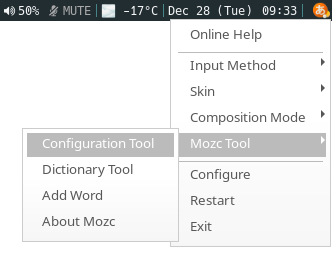
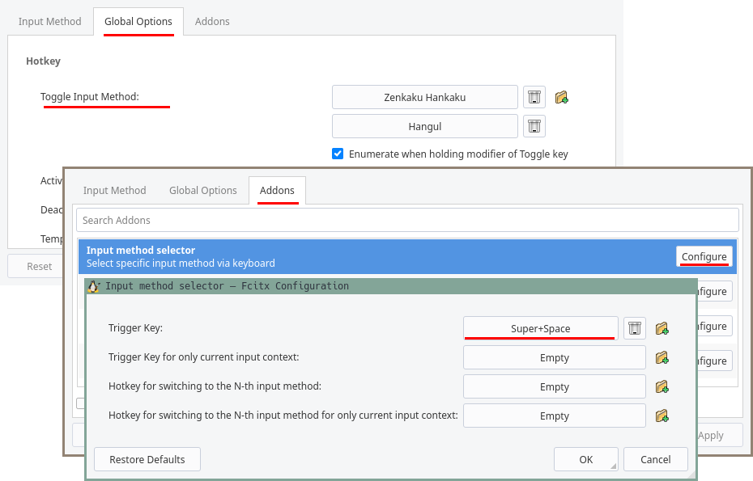
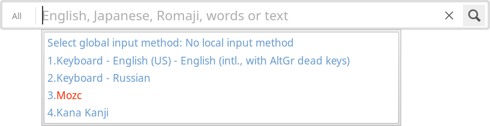
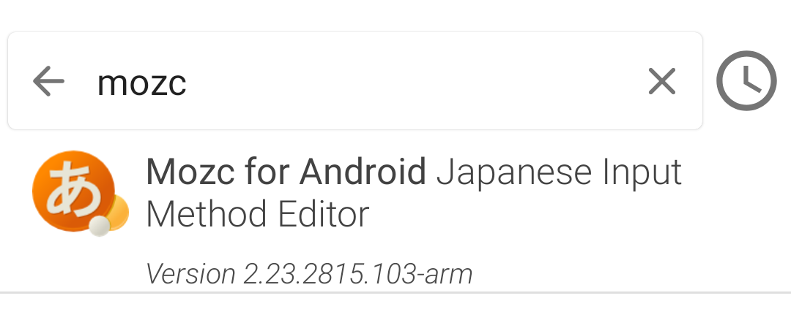
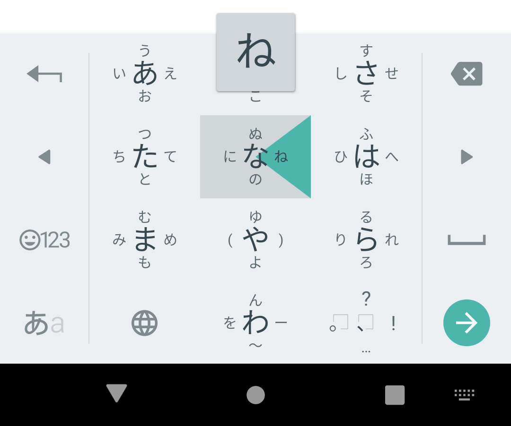

How to type in Japanese

Ever wondered how Japanese people type? No one knows the answer. Some people say that they use huge keyboards with hundreds of keys like on the picture. Luckily for us, we don't have to imitate Japanese people and buy a keyboard like that. There are programs called Input Method Editors (IMEs) that help us do the same thing on a regular computer keyboard. With an IME you type Latin letters and the software automatically converts them to Japanese characters.
Typing words in a dictionary, searching the web or talking to people who pretend to be Japanese on the Internet all require being able to input Japanese characters. If you're serious about learning Japanese, you need to learn how to do it.
How an IME works
On a PC, the process is as follows.
- You type a Japanese word in roman letters. For example,
hiiragi. ひいらぎappears on the screen as the IME immediately converts what you type to kana.- To convert
ひいらぎto柊, the word's kanji form, you need to press Space and select from a number of choices. Or you can leave the word as is by pressing Enter.
Japanese people themselves type with romaji when using a computer keyboard.
Often in Japanese,
a single word can be spelled multiple ways,
and different words can be read the same.
For example, しんちょう could be written as 慎重, or as 身長.
This is why you may be given multiple options to choose from when you press Space.
Let's walk through how to install a Japanese keyboard in GNU+Linux. There are actually two components you have to install to set everything up. One is called an Input Method Framework (IMF) and the other one is called an Input Method Editor (IME). An IMF is a program that allows the user to switch between different IMEs, whilst the IMEs are responsible for converting Latin characters to Japanese. You can have several IMEs installed and running at the same time, but you can only run one IMF at a time.
Input method framework
In this tutorial, I'm going to explain how to use Fcitx, but other frameworks are also available.
Other IMFs
Fcitx5 is the successor of Fcitx. Currently, it has issues when working with i3wm and possibly other WMs. I can't recommend it yet.
IBus is preinstalled in GTK-based environments like GNOME. If you're using GNOME, chances are that you don't have to configure anything at all. Just go to the Settings and enable Japanese input. Because I've had problems getting IBus to work with i3wm, I don't recommend it.
This is what you need to do.
- Install Fcitx.
- Enable Fcitx to run on start up.
- Install an IME.
- Configure everything.
To install Fcitx, run the following command.
$ sudo pacman -S fcitx fcitx-configtool fcitx-qt5 fcitx-qt6
Note: fcitx-qt6 is needed
to use Qt6 applications (like Anki 2.1.50 and later) with Fcitx.
If you're not running an Arch-based distro, find the appropriate packages in the repositories.
Next on the list, you need to enable autostart.
Assuming you're starting Xorg using
startx/xinit
like a Chad, the best way to achieve it is to modify ~/.xinitrc, adding the following lines.
export GTK_IM_MODULE=fcitx
export QT_IM_MODULE=fcitx
export XMODIFIERS=@im=fcitx
fcitx &
Note that the xinitrc file may be located anywhere on your computer depending on how you set up your dotfiles. If you have an xprofile file, and you source it on start up, it is also possible to put the commands there. It doesn't really matter which file you put the commands to as long as it is sourced on start up.
You can look at the contents of my xinitrc file
here.
Input method editor
I recommend either KKC or Mozc.
KKC is not as rich as Mozc, but it gives a more plug-and-play experience.
Install fcitx-kkc.
$ sudo pacman -S fcitx-kkc
Although Mozc originates from Google Japanese Input, it is free/libre.
Install fcitx-mozc.
$ sudo pacman -S fcitx-mozc
Configuration
To configure Fcitx, run fcitx-configtool.
You can also bring it up via an application launcher, like
Rofi.
In the settings, press + to add the input methods you want.
Input methods themselves don't require any specific configuration.
In case you want to explore their settings,
KKC can be configured by clicking on the gear icon.

Fcitx settings.
To configure Mozc, you need to use the Fcitx's tray icon.

How to access Mozc settings.
By default, you switch between IMEs by pressing Ctrl+Space. I prefer to use an add-on called Input method selector instead. In the config tool, set the trigger hotkey to none by clicking on it and pressing Enter. Then go to "Addon" > "Input method selector", press "Configure" and set Global SelectKey. I prefer Super+Space.

Enable Input method selector.
Now, when you press Super+Space, it will bring up a menu where you can choose an input method.

Input method selector.
Usage
Using an IME usually comes down to typing what you want, then pressing Space to convert it. Every IME wants you to suffer, that's why the way each of them is used slightly differs. Don't expect keyboard shortcuts to be the same across IMEs. Some shortcuts may even be missing completely.
Android
On Android, you need to download a Japanese keyboard.
To do this open the F-Droid catalog,
then in the search bar type Mozc.

Mozc for Android.
Once installed, launch the app and follow the instructions to set it up.
Most Japanese people use a 12 keys type layout. This is how the keyboard looks like. You tap and pull toward the character you'd like to input. Once you get used to it, it's much faster than the QWERTY layout because typing words requires less total keystrokes.

Japanese keyboard.
To type the small っ character, select つ, then tap on the 大⇔小 button and pull up.
If you don't like the 12 keys keyboard layout, you can switch to the QWERTY layout in settings.
Tags: guide